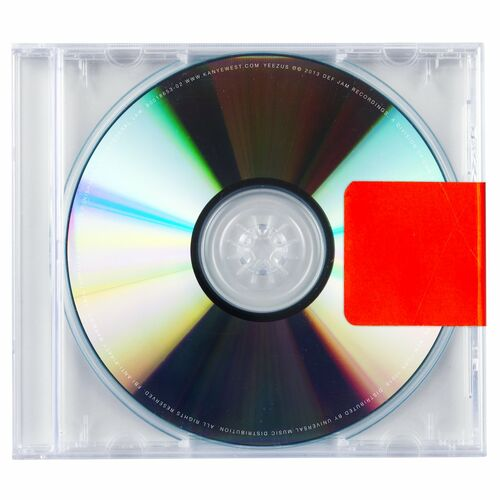

<ion-card>
  <ion-grid>
    <ion-row>
      <ion-col size="2" style="display: flex; align-items: center; justify-content: center;">
        
      </ion-col>
      <ion-col size="5" style="display: flex; align-items: center; justify-content: center;">
        Luis Enrico
      </ion-col>
      <ion-col size="5" style="display: flex; align-items: center; justify-content: center;">
        12 minutos atrás
      </ion-col>
    </ion-row>
    <ion-item-divider></ion-item-divider>
    
    <ion-row>
      <ion-col size="5" style="display: flex; align-items: center; justify-content: center;">
        
      </ion-col>
      <ion-col>
        <p style="margin: 0;">"Kanye West redefiniu o rap com Yeezus, um álbum ousado, cru e experimental que desafia convenções. Lançado em 2013, o projeto é uma jornada sônica que mistura industrial, eletrônica e hip-hop, criando um som abrasivo e perturbador, mas incrivelmente cativante."
      </ion-col>
    </ion-row>
    
    <ion-row>
      <ion-col size="10">Yeezus, Kanye West</ion-col>
      <ion-col size="1"><ion-icon name="heart-outline"></ion-icon></ion-col>
      <ion-col size="1"><ion-icon name="chatbox-ellipses-outline"></ion-icon></ion-col>
    </ion-row>
  </ion-grid>
</ion-card>
